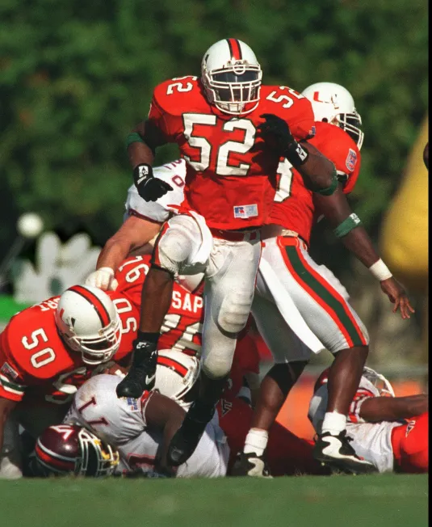
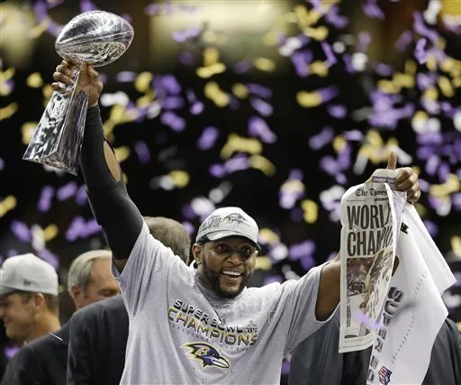
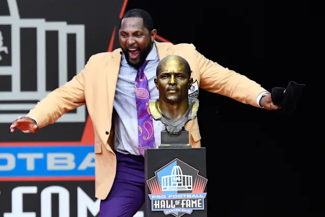

Youth and College Career
Ray Lewis began his organized football career at Kathleen High School, in Lakeland, Florida. At Kathleen High School, Ray Lewis earned the title of an All-American during his senior season. During his senior season, he committed to the University of Miami, where he played three seasons. During his seasons at Miami, he proved to be one of the top players in the country.

NFL Career
In 1996, Lewis was drafted 26th overall in the first round to the Baltimore Ravens. Lewis spent his entire 17-year career with the Ravens, where he proved to be one of the most dominant players in NFL history. During his tenure with the Ravens, Lewis won two Superbowls and cemented himself as a surefire hall of famer, which he was voted into in 2018.

Career Accomplishments
- 1998 – Second Team All-Pro
- 1999 – First Team All-Pro
- 2000 – First Team All-Pro
- 2000 – Super Bowl Champion
- 2000 – Super Bowl MVP
- 2001 – Second Team All-Pro
- 2003 – First Team All-Pro
- 2004 – First Team All-Pro
- 2006 – First Team All-Pro
- 2007 – Second Team All-Pro
- 2008 – First Team All-Pro
- 2009 – First Team All-Pro
- 2012 – Super Bowl Champion
- 2013 – Baltimore Ravens Ring of Honor
- 2018 – Pro Football Hall of Fame
- 2019 – NFL 100th Anniversary All-Time Team

Controversies Surrounding Lewis
- Lewis plead guilty to obstruction of justice in a murder trial
- Fined $250,000 by the NFL and sentenced to 12 months' probation
- IGF-1 (PED) accusations before his final Super Bowl